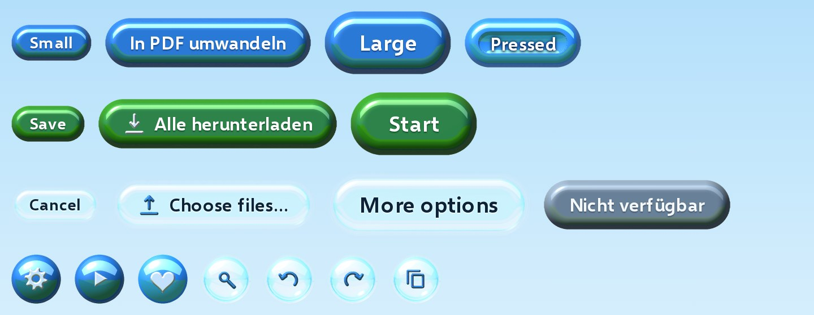
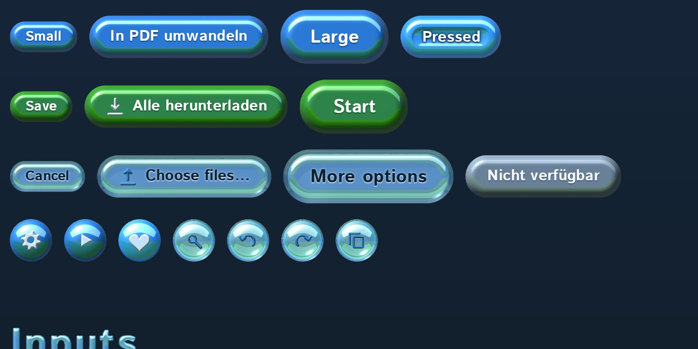

Every button here was rendered in Bryce 2
Glossy controls for the web. Each one is a Bryce render with a meadow behind the camera, laid over plain HTML.
Inputs
The browser's own controls, under every skin.
Choice cards and drop zone
Feedback
Progress fills a glass tube. The spinner is eight separate renders.
Surfaces
Frosted on light pages, smoked on dark ones. In Chrome and Edge the lens bends what's behind its rim.
Panel
Big frosted pane for grouping a tool's settings. Right-click or long-press it for a menu.
Before / after


Icons
35 icons, rendered at 24 and 16 px. Aqua on their own, pearl on buttons.
heartheart-outlineclosemenuarrow-leftarrow-rightchevron-downswapplayhelpinfoerrorwarninggearundoredoplusminusfitsearchdownloaduploadcopycheckfilepdftextimagecodeclockcolourpinlocksunmoon
Type
Titles use Aerolith Display, a colour font of rendered letters, from 32 px up. Body text uses Selawik or Istok Web.
Aqua
Glass PearlText face
Drag your photos here and they'll be ready in a moment. Nothing leaves your computer: the conversion runs right here in the browser, even when you're offline.